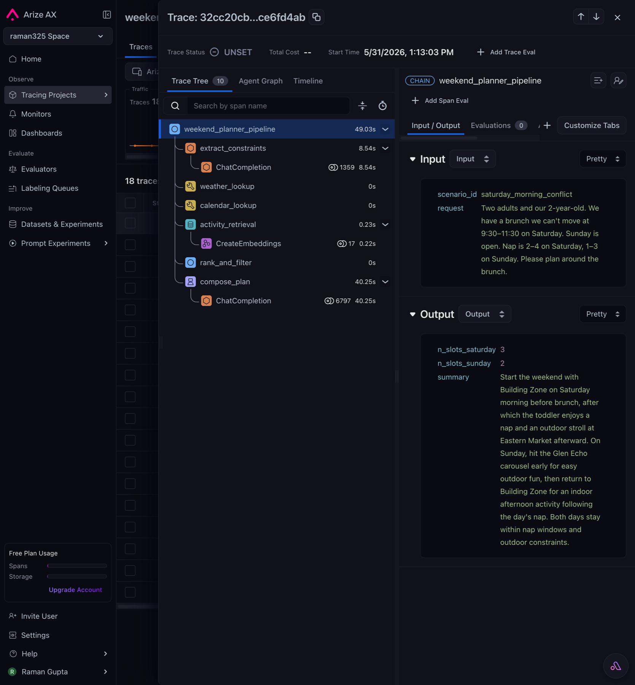
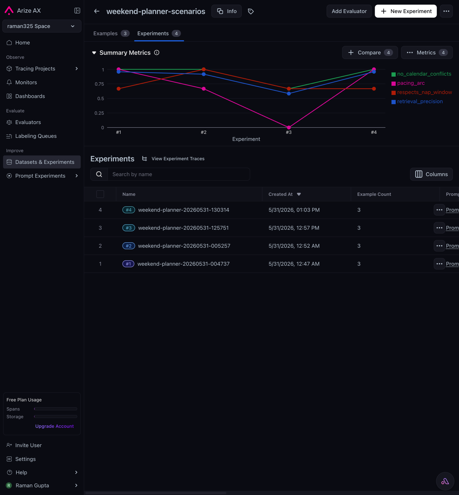
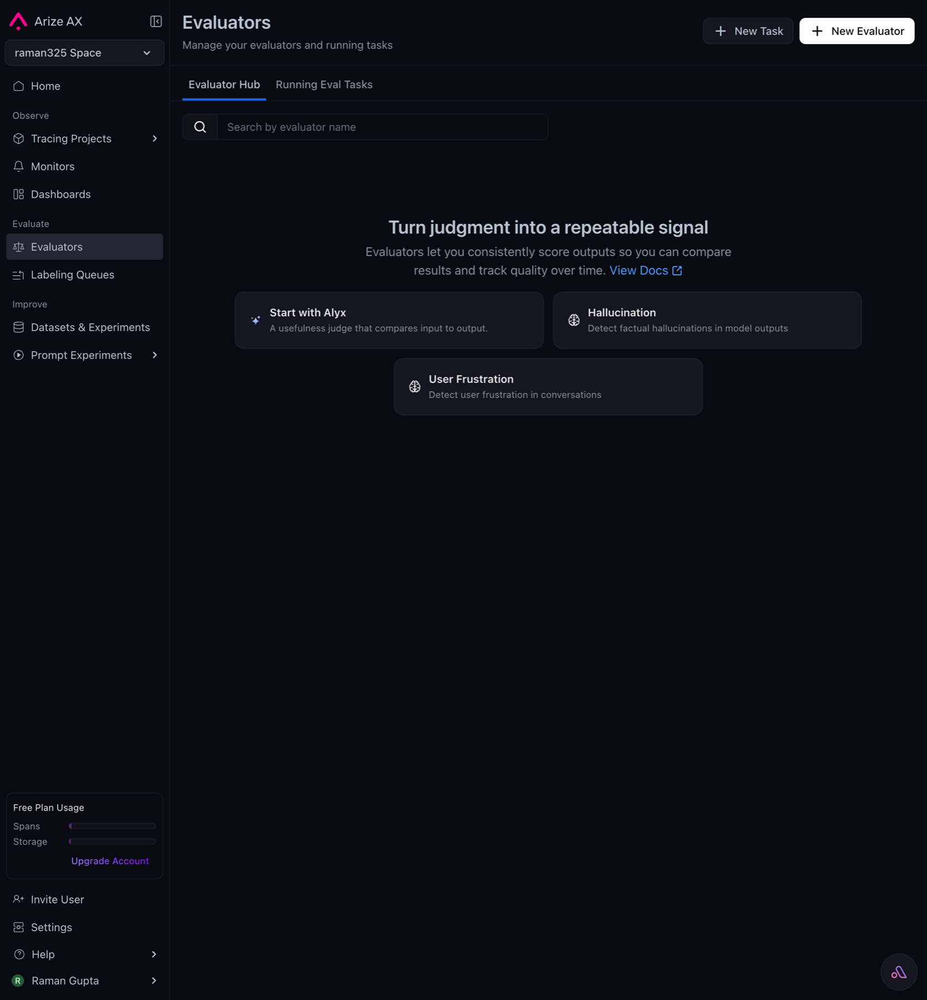
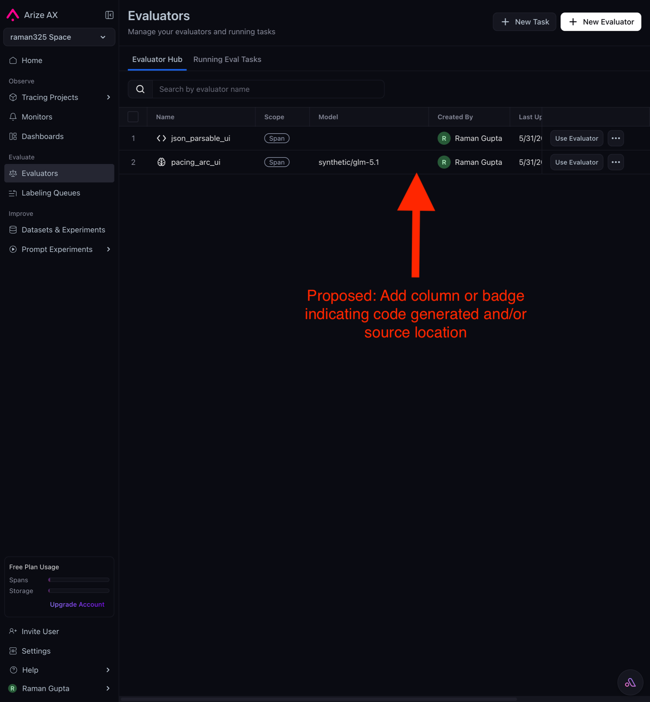
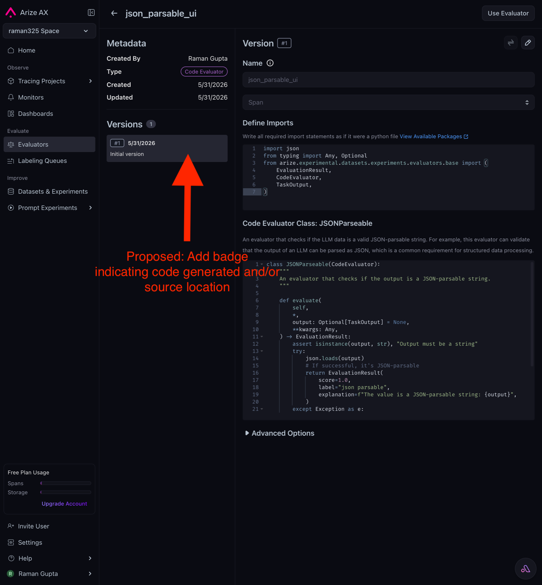
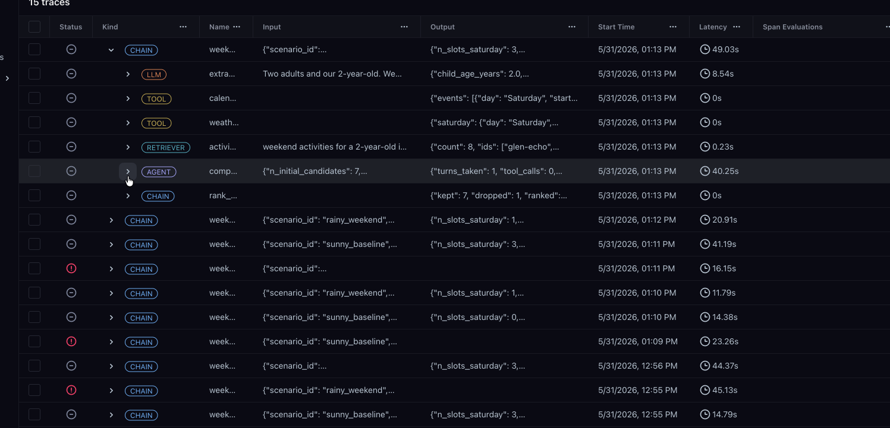

Raman’s Arize PM take-home assignment
1 · What I built
To test Arize/Phoenix capabilities, I decided to leverage a real-world problem: finding ways to keep my toddler occupied on the weekends. My weekend planner agent suggests an itinerary for my family of three, taking into account my location (Washington, DC), scheduling conflicts, weather, my daughter’s age, and her nap window. I then created a dataset of scenarios to test the agent, and ran evaluations through code to score the responses against four criteria:
no_calendar_conflicts(code) — no plan slot overlaps an existing calendar event.respects_nap_window(code) — no plan slot overlaps my daughter’s nap window.pacing_arc(LLM-as-judge) — the plan has a sensible energy arc: a demanding activity in the morning, something restful after the nap, balanced across Saturday and Sunday.retrieval_precision(LLM-as-judge) — the share of retrieved activities a judge labels actually relevant to the family’s request.
The trace shape
weekend_planner_pipeline (CHAIN)
├── extract_constraints (LLM) family request → structured constraints
├── weather_lookup (TOOL) scenario_id → forecast
├── calendar_lookup (TOOL) scenario_id → events
├── activity_retrieval (RETRIEVER) query → top-k activities
├── rank_and_filter (CHAIN) filter by age/weather/travel, rank
└── compose_plan (AGENT) autonomous tool-calling loop
├── chat.completions (LLM) auto-instrumented
├── activity_retrieval (RETRIEVER) ← when agent invokes its tool
│ └── embeddings.create (LLM) auto-instrumented
└── chat.completions (LLM) final plan JSON
2 · The app in Arize
Two views of the same app inside AX: the live trace structure on the production side, and the dataset + experiment + eval-results view on the development side.
{kind=link}

{kind=link}

weekend-planner-scenarios dataset (3 rows), four experiment runs, with the four evaluator scores charted across runs — no_calendar_conflicts, pacing_arc, respects_nap_window, retrieval_precision.3 · What went well · what didn’t
Compressed first-pass impressions from the build.
Went well
- Well-documented — Claude was able to set up the Arize integration with minimal direction.
- Experiment results auto-linked to spans — the SDK handles span ↔ experiment-run linkage transparently.
- Custom providers are easy to wire up — both my self-hosted LiteLLM instance and Gemini configured cleanly in the Playground.
- Auto-instrumentation just works — latency and token data flowed without any code on my part.
Didn’t
- Phoenix vs Arize self-hosted vs AX — confused which to use when, in docs or in packaging. See Section 4.
- Code-defined evaluators are invisible in the UI. My 4 evaluators in
evals/show up as columns when an experiment runs, but the UI has no “evaluators owned by this project” surface. - Trace UI bug: sibling spans reorder during expand interactions. Reproduced live; underlying span data is correct. See the Appendix for a GIF.
4 · Problem · Phoenix, Arize self-hosted, and AX feel like the same product
After shipping a working app against AX, I still couldn’t write a one-sentence answer to “if I’m new and want X, do I install Phoenix or Arize?” The boundaries are unclear in two places at once:
-
In the docs and homepage. The two products’ own taglines describe the same activity in nearly the same words:
Phoenix: “AI Observability and Evaluation … send traces, score outputs using evaluation tests, iterate on prompts, optimize with experiments.”
Arize AX: “AI Engineering Platform … observe, improve, and evaluate AI agents and AI applications with confidence.” -
In the SDK packaging. Concrete examples from this build:
- Namespacing is confusing:
phoenix.otelships inarize-phoenix-otel,arize.otelships inarize-otel, and nothing tells you which to install for AX or how they relate. - Code makes boundaries unclear: a typical AX app pulls imports from
phoenix.*,arize.*, andopentelemetry.*in the same file — they layer on top of each other but the layering isn’t legible anywhere.
- Namespacing is confusing:
I infer from OpenInference being the shared underlying spec that span data is portable across Phoenix and Arize, but that portability is hidden behind separate packages and doc sites with no clear handoff.
How to address this
Two complementary fixes, ordered cheapest first:
- Add a “which Arize?” doc. Decision tree at the top of the AX docs — Phoenix vs self-hosted vs AX, each leading to its own setup guide.
- Unify or relabel the packaging. Consolidate the
arize-*+arize-phoenix-*installs into one namespace with optional extras, or rename and cross-link to make the sibling relationship obvious.
5 · Feature proposal · Expose code-defined evaluators in the UI
My 4 evaluators in evals/ generate experiments that I can view in the UI, but the Evaluator Hub itself is empty. A teammate landing on the Evaluators page would think this project has no evaluators. The eval columns show up on the Experiments page, but it’s a dead end — no way to reuse them, edit them, or even tell they came from code.
{kind=link}

{kind=link}

{kind=link}

Proposed: the SDK auto-registers code-defined evaluators in the Hub (left), with a badge on the list and a source marker on the detail page (right) so users can tell at a glance which entries came from code vs the UI form.
Why this drives adoption. Code-defined evaluators are how serious agent developers actually work — versioned, reviewable, CI-runnable. AX already has the right surface (Hub, “Use from Hub” picker, per-experiment scoring) but it only serves users who author through the UI. Bridging the gap means agent developers building real apps see their own code as first-class in AX from day one, instead of “a thing the UI doesn’t know about.” That removes the “is AX really for me?” friction that surfaces the first time a code-first user opens the Evaluators page and sees an empty list despite running evals in production — and unlocks the actual job AX is uniquely suited for: a cross-functional layer where PMs, oncalls, and customer-facing roles can collaborate around evaluators that developers own in code.
Solution. When experiments.run(evaluators=[...]) is called, the SDK introspects each evaluator and POSTs it to the Hub using the exact storage shape AX already accepts from the UI (Python source for Code Evaluators; prompt + choices + model for LLM-As-A-Judge). Code-defined evaluators then show up in the Hub, in the “Use from Evaluator Hub” picker, and on experiment results — same first-class treatment as anything authored in the UI. First time the UI acknowledges that the code-eval world exists.
Implementation note. Functionally, the UI already exists. Every field the Hub displays today is populatable from a live Python object — Name from _name, Created By from the API key’s owner, Type from _kind, Description from __doc__, Source from inspect.getsource() — and the SDK just needs to hit the same internal endpoint the “Create Evaluator” form already POSTs to. The Hub list, view page, “Use from Hub” picker, and the experiment ↔ evaluator association all already work. Some minor UI additions are still worth shipping — a “code-defined” badge in the Hub list, a source-file or Git ref on the view page — so users can tell at a glance which evaluators came from code vs the UI form. But that’s polish on an existing flow, not a new surface.
Architecture
# TODAY
experiments.run(evaluators=[PacingArcEval()])
│
└─► AX backend
├── stores eval results (columns on experiment)
└── no Hub entry created — invisible to UI
# PROPOSED
experiments.run(evaluators=[PacingArcEval()])
│
├─► SDK introspects
│ name = evaluator._name
│ kind = evaluator._kind (CODE | LLM)
│ description = evaluator.__class__.__doc__
│ source = inspect.getsource(evaluator.__class__)
│ rubric = (for LLM-judge) classifier.{prompt,choices,model}
│
├─► POST /v1/evaluators (same endpoint the UI form already uses)
│ └─► Hub entry created (or new version, if name exists)
│
└─► stores eval results AND links experiment ↔ evaluator
└─► visible in Hub, “Use from Hub” picker, view page
MVP and what’s next
MVP: the SDK auto-registers code-defined evaluators into the Hub during experiments.run(...). That ships all of: visibility in the Hub list, attachability via “Use from Hub,” and the experiment ↔ evaluator association. One SDK release; no UI work; no schema migration.
Post-MVP, in priority order: (1) surface “used in N experiments, mean score 0.84” on the Hub view page so the Hub starts answering “is this eval working?”; (2) link UI-defined evaluators with the same name as variants of the same concept — the foundation for side-by-side rubric comparison; (3) ship a structured RubricEvaluator(prompt=..., choices=..., model=...) SDK class so LLM-judge code evaluators can be forked into editable UI templates.
Appendix · The reorder bug
{kind=link}

Step-by-step reproduction:
| Action | Order of the last two siblings |
|---|---|
| Expand the root row | … RETRIEVER → AGENT compose_plan → CHAIN rank_and_filter |
Click expand on rank_and_filter (CHAIN) | … → CHAIN rank → AGENT compose |
Click expand on compose_plan (AGENT) | … → AGENT compose → (child) → CHAIN rank |
Confirmed pure render-side. Fetched the spans via ArizeClient().spans.export_to_df() — parent_id and start_time are both correct in the underlying data. The renderer is using a non-chronological default sort, and the order shifts as a side-effect of expand interactions.